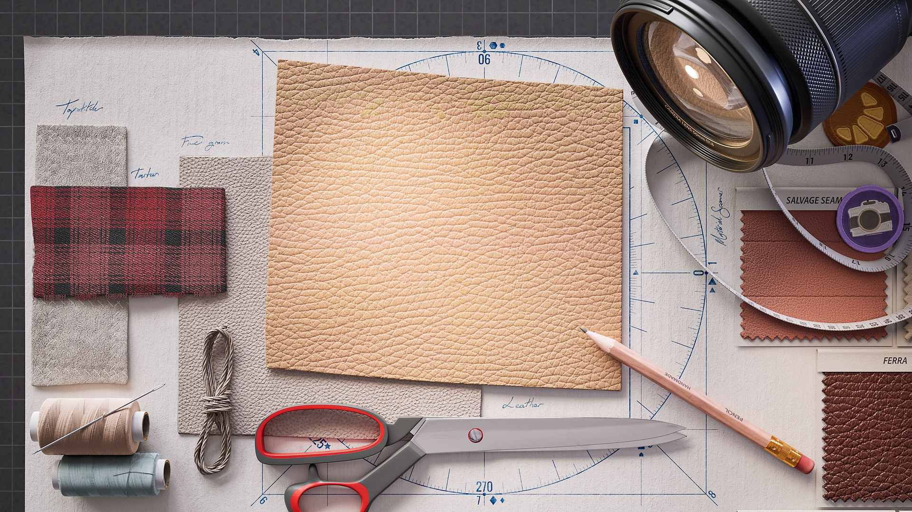
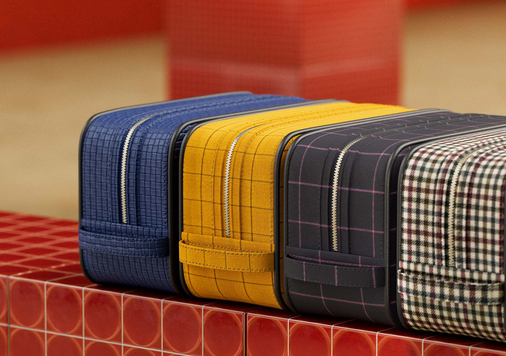
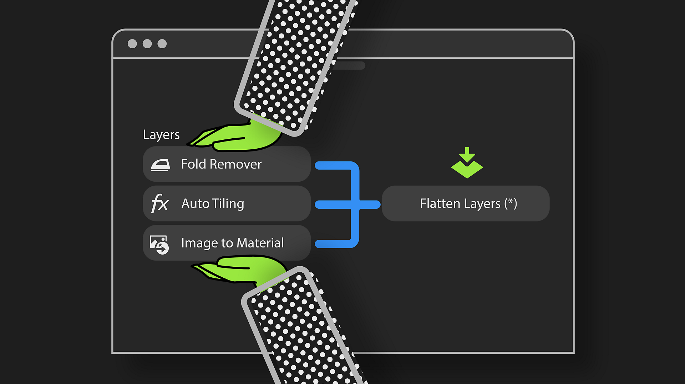
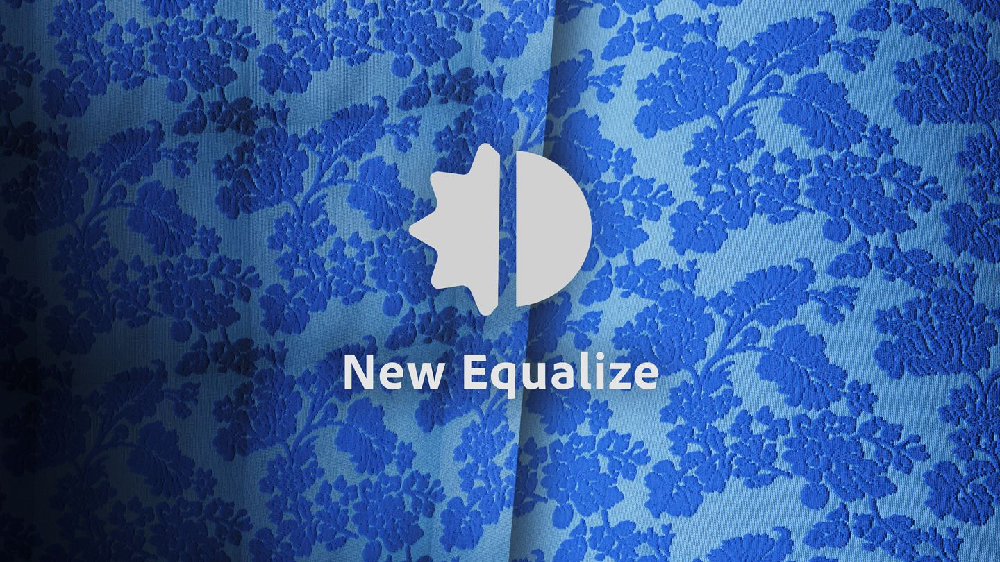
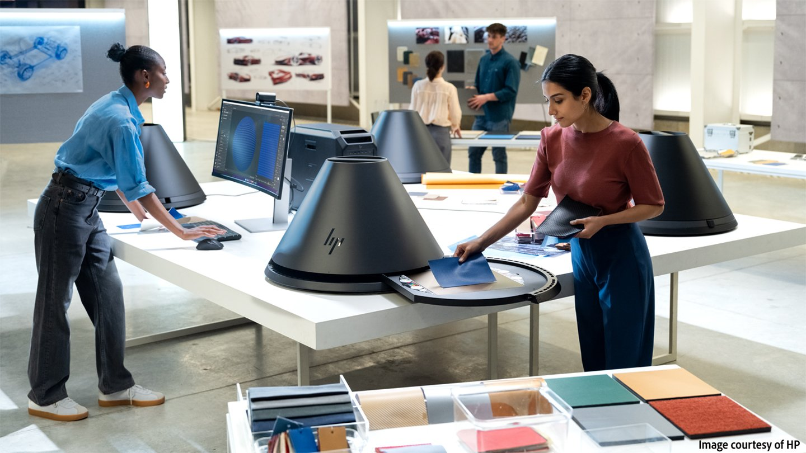

Spend less time between capturing your materials and exporting their digital twins with new and improved tools in Substance 3D Sampler 5.1!
The main new features include:
Save time processing structured or patterned materials—like fabrics—by automatically generating seamless tiles.
More info here.

Boost performance and reduce computation time with the Flatten layer by transforming stacked layers results into a single set of maps within one unified layer. Rename and duplicate them for more efficiency!
More info here.

With enhanced Equalize and Clone Stamp filters, plus a new automatic fold removal feature for fabrics, you can achieve perfect scans in just a few clicks—no matter how complex the material.

Now with Roughness map generation and automatic physical size detection in Studio mode, you get a more detailed and accurate material digital twin than ever before!

(Released: August 7th, 2025)